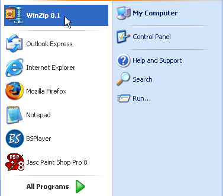
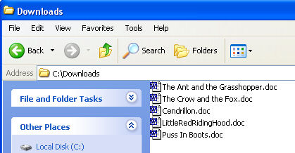
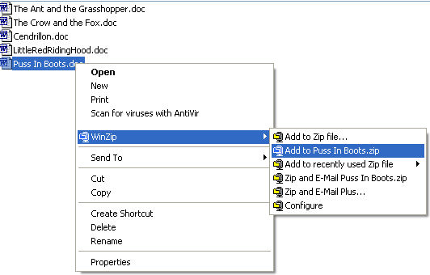
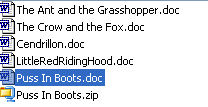
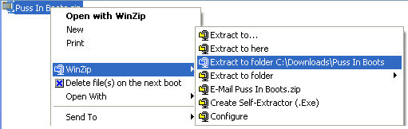

Free
computer Tutorials
|
Free
computer Tutorials
|
|
 home home |
Stay
at Home and Learn
|
||||
How to Zip Files with WinZip |
|||||
|
UnZipp Files
If you have one really big file, or lots of small files, it's better to squash them down in size.You do the squashing with a zipping programme. The most popular is called WinZip. It's so popular that you may even have it on your computer already. So popular that the Word spellchecker doesn't even give it a red wiggly line when you type it out!
To check if it's on your machine, click the Start button in the bottom left of your computer screen with the left mouse button. When the menu pops up, look for WinZip at the top. (But DON'T click it! You don't need to open the software up.)  As you can see, this computer has WinZip installed. If you can't see it on the Start menu, click on All Programs, and look for it there - again, don't open it! If you don't have it, you can get it from the CD Rom of practically any computer magazine at your newsagents. Or download a free trial version from the internet. Just type WinZip into any search engine.
Zip a file you want to send to somebody elseWhen you want to send somebody else a big file (or more than one file), you can zip them up. First, you need to locate the file you want to send. So, do this:

 You may then get a box popping up asking you whether you agree or disagree. Click I agree, and Winzip goes to work. Your file will be zipped up: 
If you want to zip an entire folder, then do exactly the same as above.
Unzip a file that has been sent to youTo unzip a file that has been sent to you, or that you have downloaded from the internet, perhaps, do the following:

It's quite easy, once you get the hang of it. And it could save you
a small amount of money in internet telephone bills! <--Back to the Beginner's Computing Contents Page View all our Home Study Computer Courses
|